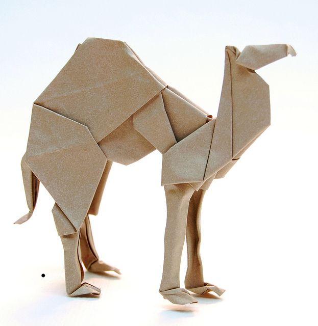
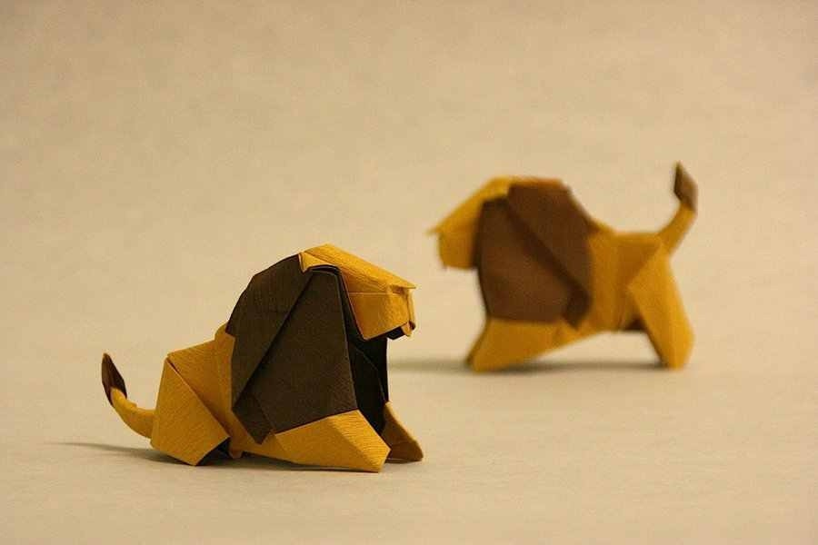
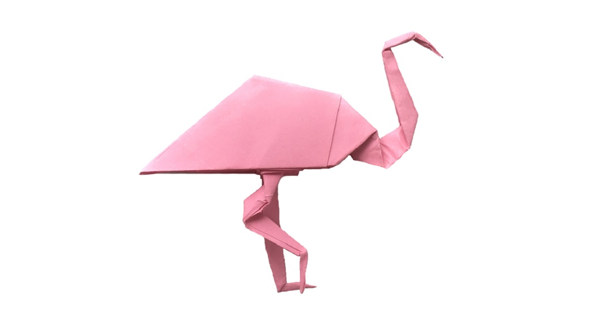

Camel

Facts about Camel.
There are two types of camels: One humped or “dromedary” camels and two humped Bactrian camels.
Camels have three sets of eyelids and two rows of eyelashes to keep sand out of their eyes.

Facts about Lions.
Lions belong to the cat family, scientifically they also belong to the family ‘Felidae’. They are also called ‘big cats’.
Lions are though called ‘king of the jungle’, they hardly live in the jungle. They are mostly found in the open savannahs of Africa.
Lions are the second biggest type of cats and they are only a little smaller than tigers. ...
Male lions can weigh 400lb (180kg) on an average and females can weigh close to 290lb (130Kg). They can live for 10-15 years in the wild.

Facts about Flamingo.
The word "flamingo" comes from the Spanish and Latin word "flamenco" which means fire, and refers to the bright color of the birds' feathers.
Not all flamingos are brightly colored, however, and some of the birds are mostly gray or white.
The strength of a flamingo's coloration comes from its diet. Younger birds also have less coloration.